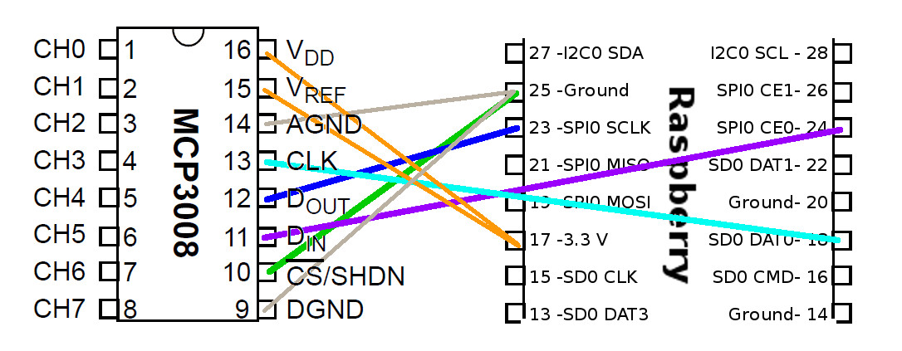
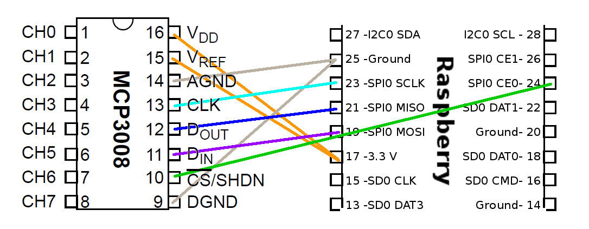

The MCP3008 is a low cost 8-channel 10-bit analog to digital converter. The precision of this ADC is similar to that of an Arduino Uno, and with 8 channels you can read quite a few analog signals from the Pi. This chip is a great option if you just need to read simple analog signals, like from a temperature or light sensor. If you need more precision or features, check out the ADS1x115 series on the next page.
Before you use the MCP3008 it will help to skim this older Raspberry Pi MCP3008 guide for more information about using it with the Raspberry Pi. However don't use the code from the older guide as it's deprecated. This guide will show you an easier way to install and use new Python code to talk to the MCP3008 ADC.
The MCP3008 datasheet is also an important resource to skim and have handy.
Wiring
The MCP3008 connects to the Raspberry Pi using a SPI serial connection. You can use either the hardware SPI bus, or any four GPIO pins and software SPI to talk to the MCP3008. Software SPI is a little more flexible since it can work with any pins on the Pi, whereas hardware SPI is slightly faster but less flexible because it only works with specific pins. If you aren't sure which to use I recommend software SPI as it's easier to setup.
Before you can wire the chip to the Pi you first need to place it into a breadboard. If you haven't used bare DIP chips like the MCP3008 before you want to press it into the breadboard so its legs straddle the empty channel in the middle of the breadboard. This way you can access each of the legs of the chip from the breadboard.
Note that the orientation of the chip matters! Be sure to place it with the half circle indention and dot towards the top. See the photo below for an example:

Once the chip is in the breadboard then you're ready to connect it to the Pi. Each of the legs of the MCP3008 chip have the following names:

Software SPI
To connect the MCP3008 to the Raspberry Pi with a software SPI connection you need to make the following connections:
- MCP3008 VDD to Raspberry Pi 3.3V
- MCP3008 VREF to Raspberry Pi 3.3V
- MCP3008 AGND to Raspberry Pi GND
- MCP3008 DGND to Raspberry Pi GND
- MCP3008 CLK to Raspberry Pi pin 18
- MCP3008 DOUT to Raspberry Pi pin 23
- MCP3008 DIN to Raspberry Pi pin 24
- MCP3008 CS/SHDN to Raspberry Pi pin 25

Note that you can swap the MCP3008 CLK, DOUT, DIN, and CS/SHDN pins to any other free digital GPIO pins on the Raspberry Pi. You'll just need to modify the example code to use your pins.
Hardware SPI : Patrick, voici le style que j'utilise
To use hardware SPI first make sure you've enabled SPI using the raspi-config tool. ( En ligne de commande: sudo raspi-config ) Be sure to answer yes to both enabling the SPI interface and loading the SPI kernel module, then reboot the Pi. Check you can see a /dev/spidev0.0 and /dev/spidev0.1 device when you run the ls -l /dev/spi* command before continuing.
Now wire the MCP3008 to the Raspberry Pi as follows:
- MCP3008 VDD (16) to Raspberry Pi 3.3V (17)
- MCP3008 VREF (15) to Raspberry Pi 3.3V (17)
- MCP3008 AGND (14) to Raspberry Pi GND (25)
- MCP3008 DGND (9) to Raspberry Pi GND (25)
- MCP3008 CLK (13) to Raspberry Pi SCLK (23)
- MCP3008 DOUT (12) to Raspberry Pi MISO (21)
- MCP3008 DIN (11) to Raspberry Pi MOSI (19)
- MCP3008 CS/SHDN (10) to Raspberry Pi CE0 (24)

Library Install
After you've wired the MCP3008 to the Raspberry Pi with either the software or hardware SPI wiring you're ready to install the Adafruit MCP3008 Python library.
You can install the library from the Python package index with a few commands, or you can install the library from its source on GitHub. Pick one of these options below. If you aren't sure I recommend installing from source on GitHub because it will also download examples to use the library.
Note that before you install the library your Raspberry Pi must be connected to the internet through a wired or wireless network connection.
Source Install
To install from the source on Github connect to a terminal on the Raspberry Pi and run the following commands:
- sudo apt-get update
- sudo apt-get install build-essential python-dev python-smbus git
- cd ~
- git clone https://github.com/adafruit/Adafruit_Python_MCP3008.git
- cd Adafruit_Python_MCP3008
- sudo python setup.py install
You should see the library install succeed and finish with a message similar to the following:

If you see an error go back and carefully check all the previous commands were run, and that they didn't fail with an error.
Python Package Index Install
To install from the Python package index connect to a terminal on the Raspberry Pi and execute the following commands:
- sudo apt-get update
- sudo apt-get install build-essential python-dev python-smbus python-pip
- sudo pip install adafruit-mcp3008
You should see a message like the following that the library was successfully installed:

Note that if you install from the Python package index you won't have the example code for the library. You'll need to download these MCP3008 examples to the Pi manually and run them in the next section.
Library Usage
To learn how to use the library I'll walk through some of the example code included with it. These examples are in the examples folder if you downloaded and installed the library from source. Change to that folder by running on the Pi:
- cd ~/Adafruit_Python_MCP3008/examples
Note: If you installed the library from the Python package index using the pip command you won't have the example code and will need to download it to the Pi manually.
We'll start by looking at the simpletest.py example which is a basic example of reading and displaying the ADC channel values. First let's open the file to configure it to use software or hardware SPI. Run the following command to open the file in the nano text editor:
- nano simpletest.py
Now scroll down to the following block of code near the top:
- # Software SPI configuration:
- CLK = 18
- MISO = 23
- MOSI = 24
- CS = 25
- mcp = Adafruit_MCP3008.MCP3008(clk=CLK, cs=CS, miso=MISO, mosi=MOSI)
- # Hardware SPI configuration:
- # SPI_PORT = 0
- # SPI_DEVICE = 0
- # mcp = Adafruit_MCP3008.MCP3008(spi=SPI.SpiDev(SPI_PORT, SPI_DEVICE))
By default this section of code configures the chip to use the software SPI configuration described in the previous section. If you used different pins for your software SPI setup be sure to change the values of CLK, MISO, MOSI, CS to the pins you used.
If you used hardware SPI then you'll need to comment out the software SPI section and uncomment the hardware SPI section. The configuration should look like this for hardware SPI:
- # Software SPI configuration:
- # CLK = 18
- # MISO = 23
- # MOSI = 24
- # CS = 25
- # mcp = Adafruit_MCP3008.MCP3008(clk=CLK, cs=CS, miso=MISO, mosi=MOSI)
- # Hardware SPI configuration:
- SPI_PORT = 0
- SPI_DEVICE = 0
- mcp = Adafruit_MCP3008.MCP3008(spi=SPI.SpiDev(SPI_PORT, SPI_DEVICE))
Now save the file by pressing Ctrl-o, enter, then Ctrl-x to quit. You can run the simpletest.py code by executing at the terminal:
- sudo python simpletest.py
The example will print out a table with all of the ADC channels and their values. Every half second a new row will be printed with the latest channel values. For example you might see output like:

Each column represents a different channel and the header on the first row shows the channel number (from 0 to 7, 8 channels total). The value for each channel is the ADC value for that channel. This is a number that ranges from 0 to 1023, where 0 means the signal is at a ground level, and 1023 means it's at the AREF value (3.3V) or higher. In between values are proportional to each other, so a value of 512 is about 3.3 / 2 or 1.65 volts.
Press Ctrl-c to stop the example.
Try connecting a potentiometer to one of the analog inputs. Connect the middle leg of the potentiometer (the wiper) to an analog input, then connect one of the other legs to Pi 3.3V and the other leg to Pi ground. Run the example and twist the potentiometer around. You should see the ADC value change and get lower as the voltage from the potentiometer decreases, and get higher as the voltage increases!
To understand how the code works open the simpletest.py example in nano again. Now scroll down to the main loop at the bottom:
- print('Reading MCP3008 values, press Ctrl-C to quit...')
- # Print nice channel column headers.
- print('| {0:>4} | {1:>4} | {2:>4} | {3:>4} | {4:>4} | {5:>4} | {6:>4} | {7:>4} |'.format(*range(8)))
- print('-' * 57)
- # Main program loop.
- while True:
- # Read all the ADC channel values in a list.
- values = [0]*8
- for i in range(8):
- # The read_adc function will get the value of the specified channel (0-7).
- values[i] = mcp.read_adc(i)
- # Print the ADC values.
- print('| {0:>4} | {1:>4} | {2:>4} | {3:>4} | {4:>4} | {5:>4} | {6:>4} | {7:>4} |'.format(*values))
- # Pause for half a second.
- time.sleep(0.5)
The code might look a little complicated but most of that complication is from printing the table. Notice this line that reads an ADC channel value and saves it in a list:
values[i] = mcp.read_adc(i)
This line is calling the read_adc() function from the MCP3008 Python library. The function takes one parameter, the channel number to read (a value of 0 to 7). As a result the function will return the current ADC value of that channel.
Reading an ADC channel in your own code is as easy as calling the read_adc() function! Pass in the channel to read and it will return the value. That's all there really is to using the MCP3008 library to read an analog value!
If you're curious you can examine and run the differential.py example just like you ran simpletest.py. Modify the configuration to suite your wiring, either software or hardware SPI. Then when you run the example it will call the read_adc_difference() function and use it to read the voltage difference between channel 0 and 1 of the chip. Sometimes it's useful to read the difference of two signals to help reduce noise and other artifacts from analog signals.
That's all there is to the MCP3008 Python library!